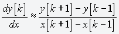
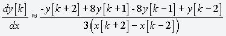
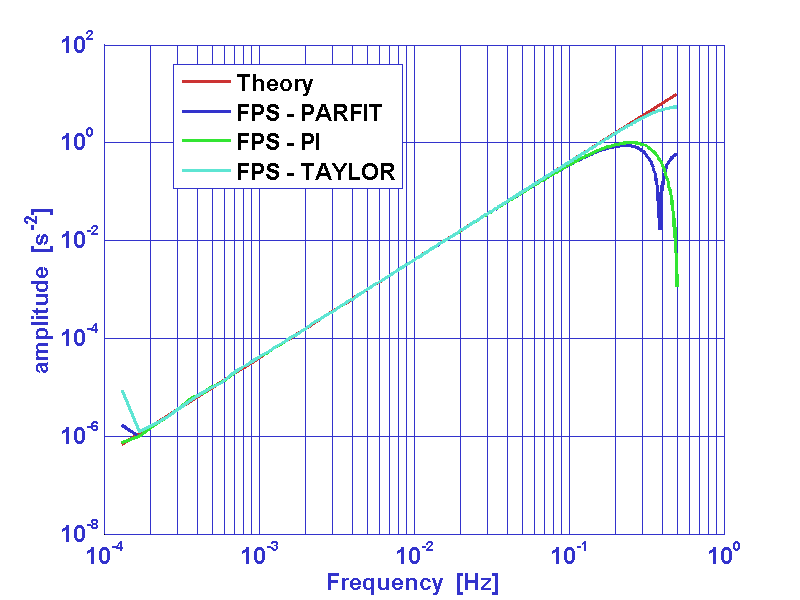

| LTPDA Toolbox™ | contents | |
|
Derivative estimation on discrete data series is implemented by the function ao/diff. This function embeds several algorithms for the calculation of zero, first and second order derivative. Where with zero order derivative we intend a particular category of data smoothers [1].
| Method | Description |
|---|---|
|
'2POINT' |
Compute first derivative with two point equation according to: 
|
|
'3POINT' |
Compute first derivative with three point equation according to:

|
|
'5POINT' |
Compute first derivative with five point equation according to:

|
|
'FPS' |
Five Point Stencil is a generalized method to calculate zero, first and second order discrete derivative of a given time series. Derivative approximation, at a given time t = kT (k being an integer and T being the sampling time), is calculated by means of finite differences between the element at t with its four neighbors: 
It can be demonstrated that the coefficients of the expansion can be
expressed as a function of one of them [1]. This allows the construction
of a family of discrete derivative estimators characterized by a
good low frequency accuracy and a smoothing behavior at high frequencies
(near the nyquist frequency).
|
Frequency response of first and second order estimators is reported in figures 1 and 2 respectively.
pl = plist(...
'method', '2POINT');
b = diff(a, pl);
pl = plist(...
'method', 'ORDER2SMOOTH');
c = diff(a, pl);
pl = plist(...
'method', '3POINT');
d = diff(a, pl);
pl = plist(...
'method', '5POINT');
e = diff(a, pl);
pl = plist(...
'method', 'FPS', ...
'ORDER', 'FIRST', ...
'COEFF', -1/5);
f = diff(a, pl);
pl = plist(...
'method', 'FPS', ...
'ORDER', 'SECOND', ...
'COEFF', 2/7);
b = diff(a, pl);
pl = plist(...
'method', 'FPS', ...
'ORDER', 'SECOND', ...
'COEFF', -1/12);
c = diff(a, pl);
pl = plist(...
'method', 'FPS', ...
'ORDER', 'SECOND', ...
'COEFF', 1/4);
d = diff(a, pl);

Figure 1: Frequency response of first derivative estimators.

Figure 2: Frequency response of second derivative estimators.
| |
Applying digital filters to data | Spectral Estimation | |
©LTP Team